프리미엄 심층 리포트 인트로 스토리용 · 내부 검토 페이지
무섭고 압도되는 느낌 우선 · 실사 호러
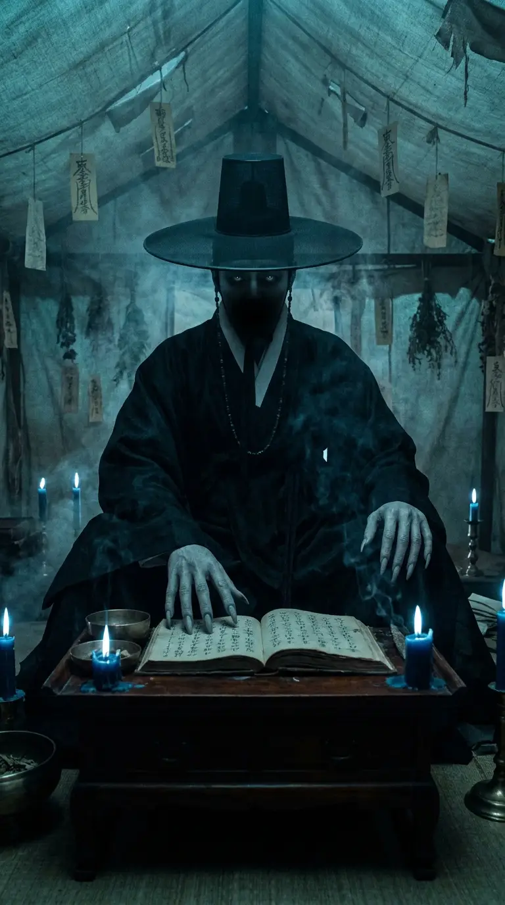
갓 아래엔 얼굴 대신 심연 — 희미한 두 점의 빛이 나를 본다. 천장에 닿을 듯한 키, 연기로 흩어지는 검은 도포, 이름이 적힌 명부.
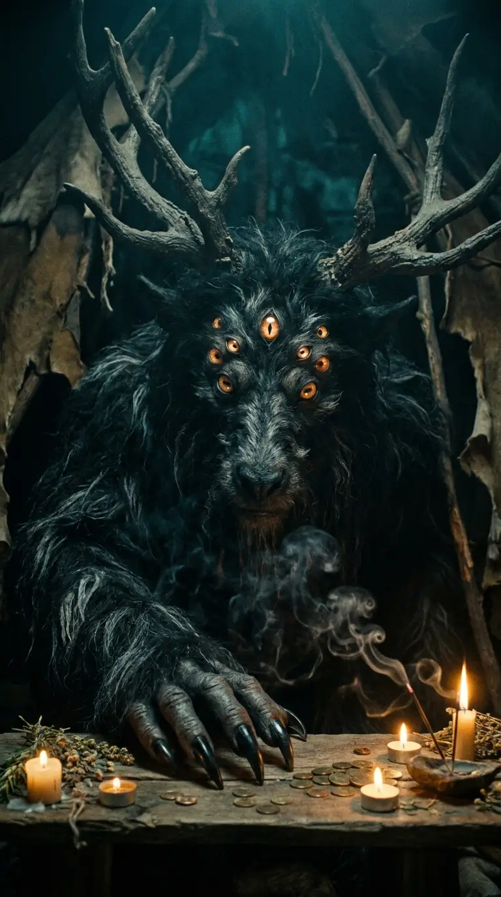
천막을 가득 채운 거대한 고대 짐승 — 아홉 개의 호박색 눈이 전부 나만 본다. 만 명의 팔자를 심판해온 신.
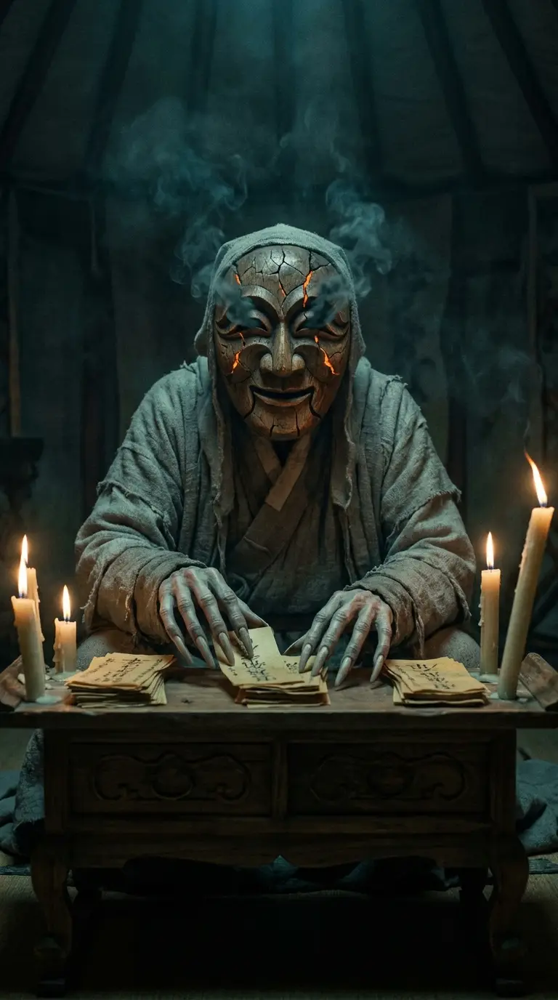
인자하게 웃는 나무 탈 — 그래서 더 무섭다. 갈라진 틈에서 새는 잉걸불 빛, 눈구멍 속엔 소용돌이치는 어둠, 소매에서 나온 너무 많은 손가락.
속을 꿰뚫는 눈매 + 분위기를 압도하는 카리스마 · 실사
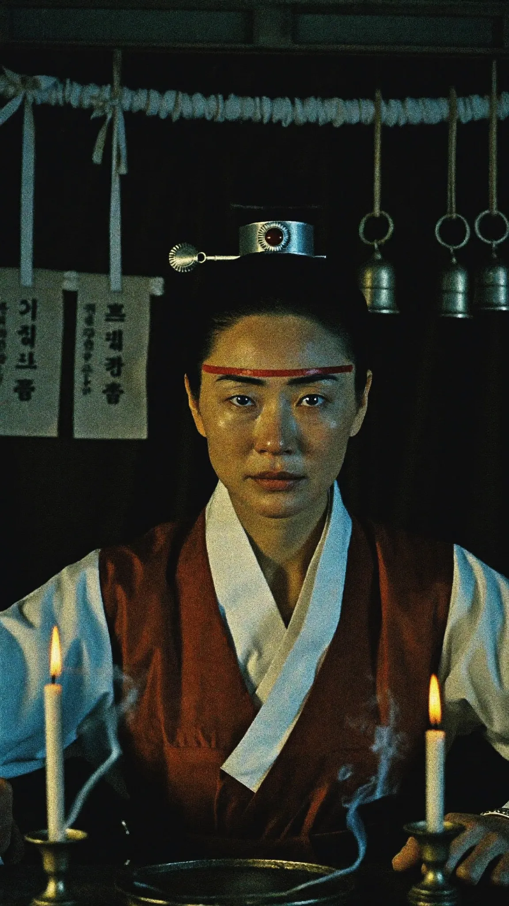
차갑게 내리꽂는 시선, 입꼬리의 옅은 냉소 — "다 알고 있다"는 얼굴. 백색+핏빛 무복, 눈가의 붉은 의식선.
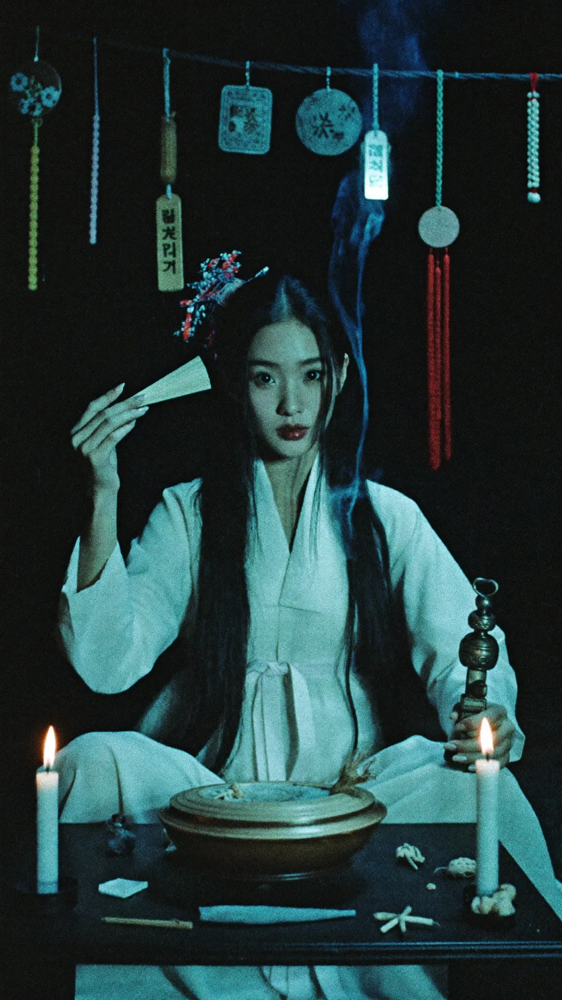
죽은 듯 고요한 정적 속 크게 뜬 눈 — 아름다운데 소름 돋는 부조화. 방울과 부채, 멈춘 촛불.
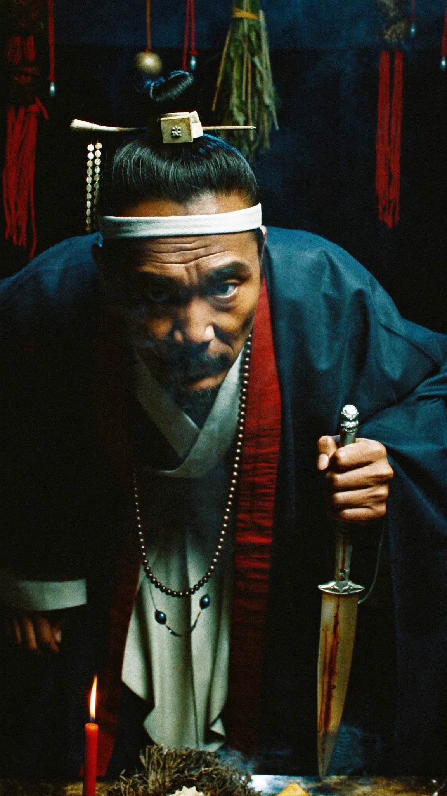
몸을 앞으로 기울이며 포식자처럼 쏘아보는 눈 — 천 번의 죽음을 본 남자. 흰 머리띠, 남색+핏빛 무복.
Soul 2.0(인물) + 실사 시네마 프롬프트 · 만화 톤 → 실사 교체
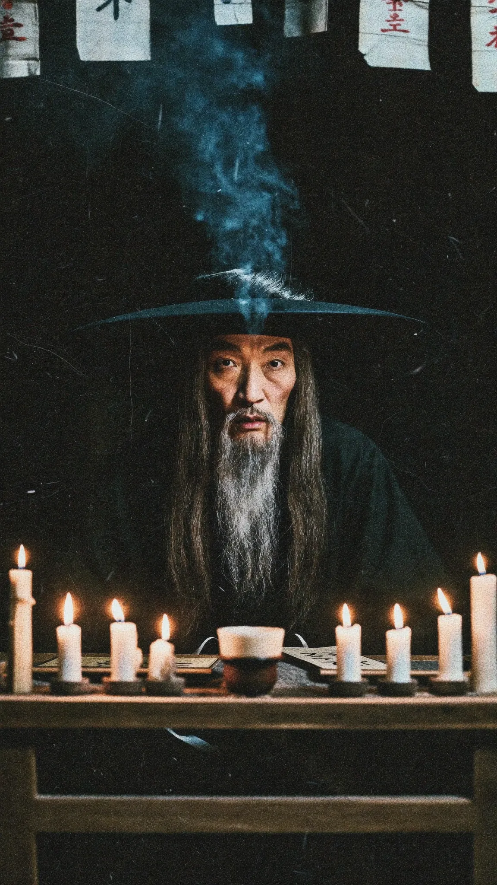
천막 안, 촛불 아래에서 카메라를 응시하는 압도적 위압감.
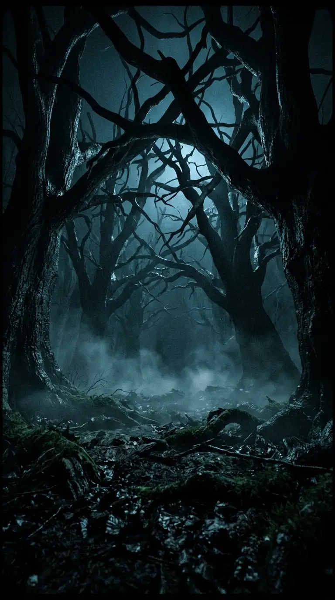
바닥에서 눈을 뜬 시점, 낮게 기어다니는 안개.
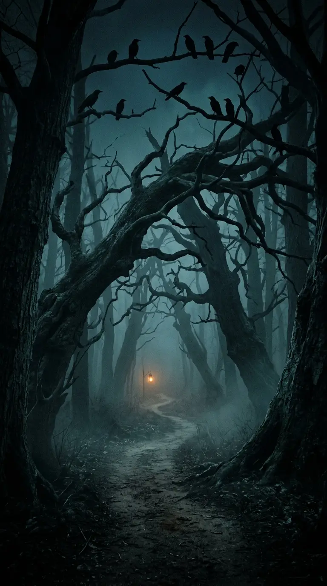
어둠 속 유일하게 따뜻한 한 점의 등불.
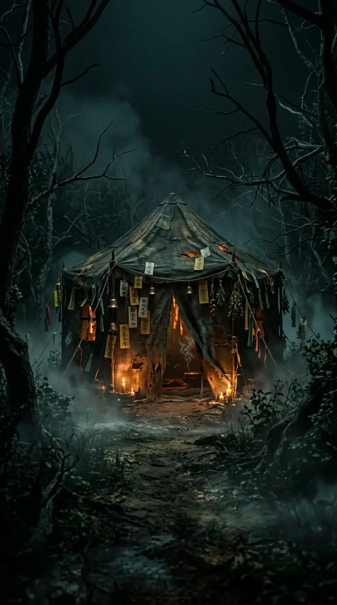
숨 쉬는 듯한 낡은 천막, 틈새로 새는 촛불.
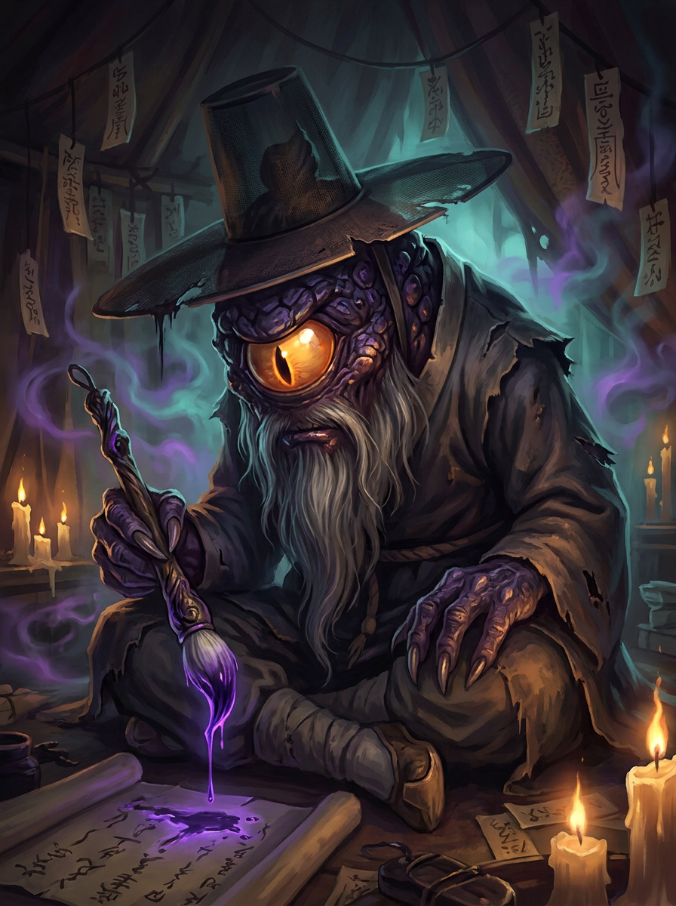
귀여운 고브럽들의 스승 — 그 진짜 모습. 외눈이 이글거리는 고대 몬스터가 갓을 쓰고 붓을 들었다.
기존 세계관 연결 ✓리포트 서명 유지 ✓반전 임팩트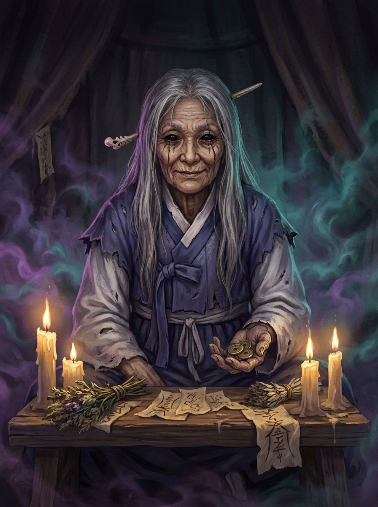
눈 전체가 먹물처럼 검은 늙은 무당. 뺨에 흘러내린 먹 자국, 손엔 엽전 — 무속 호러의 정석.
점집 리얼리티 최강무속 호러신규 캐릭터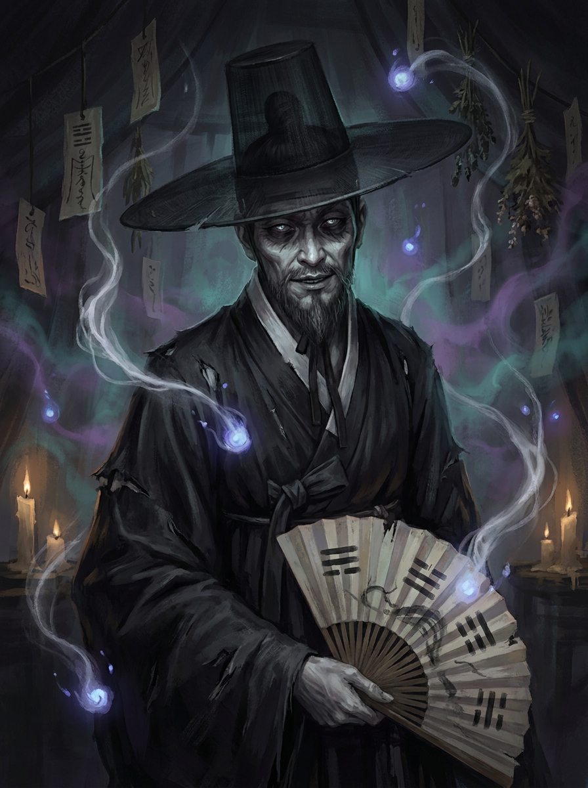
검은 갓 아래 창백한 얼굴, 팔괘 부채, 주위를 떠도는 혼백들. 차갑고 귀족적인 고수 카리스마.
고수 카리스마선비형 점술가신규 캐릭터